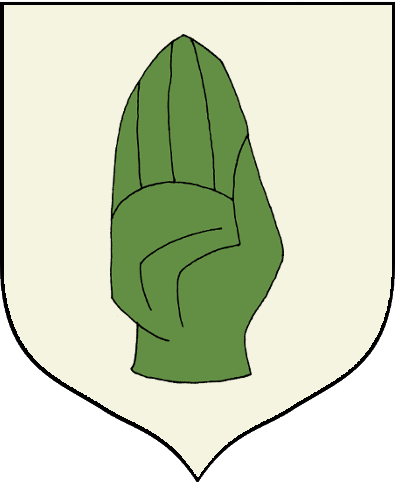

Game of Thrones is an American fantasy drama web series created by David Benioff and D. B. Weiss. It is an adaptation of *A Song of Ice and Fire*, George R. R. Martin's series of fantasy novels, the first of which is *A Game of Thrones*.
General Plot:
A story of greed, lust, thirst for power, ruthlessness, barbarity - *Game of Thrones* is a tale of seven kingdoms vying for absolute power and control of the Iron Throne.
Warring Kingdoms:
- Kingdom of the North
- Kingdom of the Mountain and the Vale
- Kingdom of the Isles and Rivers
- Kingdom of the Rock
- Kingdom of the Stormlands
- Kingdom of the Reach
- Principality of Dorne
Kingdoms with Their Lords and Symbols
| Kingdom | Lords | Symbol |
|---|---|---|
| The North | Stark of Winterfell |  |
| Kingdom of the Isles and Rivers | Harren Hoare |  |
| The Vale | Arryn of the Eyrie |  |
| The Westernlands | Lannister of Casterly Rock |  |
| The Stormlands | Baratheon of Storm's End |  |
| The Riverlands | Tully of Riverrun |  |
| Dorne | Martell of Sunspear |  |